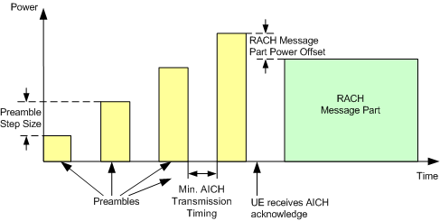

Random access procedures are used when establishing the layer 1 communication between the UE and UTRAN, i.e. when the UE attempts a registration or connection towards the R&S CMW.
For this purpose, the UE randomly selects access slots and transmits RACH preambles via the physical random access channel (PRACH). Preambles are transmitted at increasing power until the NodeB sends an ACK/NACK on the acquisition indicator channel (AICH) or until the maximum number of preambles within one cycle is exceeded. After receiving an ACK the UE transmits a message, otherwise the ramping cycle is repeated.
The following figure shows a random access procedure where the UE receives an ACK after the fourth sent preamble.

The minimum AICH transmission timing can be configured as part of the AICH settings, see "Physical Channel Downlink Settings". For configuration of the other parameters related to the random access procedure, see "PRACH Settings".
According to 3GPP TS 25.331, the UE calculates the power of the first preamble of a preamble cycle using the following formula:
P = minimum(<Max. allowed UE power>, <UL Interference> + <Constant Offset Value> + <Signaled P-CPICH Level> – <CPICH_RSCP>)
- <Maximum allowed UE Power>, <UL interference>, <Constant Offset Value>, <Signaled P-CPICH Level>:These values are broadcasted to the UE. For configuration, see:
– "Maximum UE Power" – "UL Interference" – "Constant Offset Value" – "P-CPICH Enhanced > Signalized Level" - CPICH_RSCP: denotes the CPICH received signal code power, i.e. the received signal power on one code, measured by the UE on the pilot bits of the P-CPICH.
The expected power of the first preamble is displayed at the GUI, see "Exp. Initial Preamble Power".